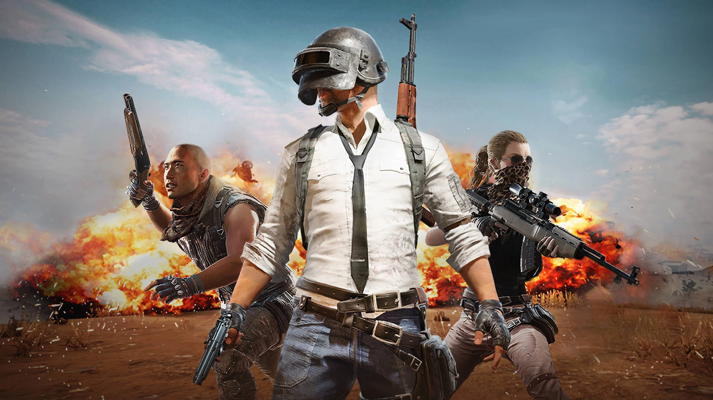

PUBG: Battlegrounds (previously known as PlayerUnknown's Battlegrounds) is a battle royale game developed by PUBG Studios and published by Krafton. The game, which was inspired by the Japanese film Battle Royale (2000), is based on previous mods created by Brendan "PlayerUnknown" Greene for other games, and expanded into a standalone game under Greene's creative direction. It is the first game in the PUBG Universe series.
The game is played from either a third-person or first-person perspective. In the game, up to one hundred players parachute onto an island where they scavenge for weapons and equipment to kill other players while avoiding getting killed themselves. The available safe area of the game's map decreases in size over time, directing surviving players into an ever tightening space to force encounters. The last surviving player (or team) wins the round.
It was first released for Windows via Steam's early access beta program in March 2017, with a full release in December 2017. The game was also released by Microsoft Studios for the Xbox One via its Xbox Game Preview program that same month, and officially released in September 2018. PUBG Mobile, a free-to-play mobile game version for Android and iOS, was released in 2018, in addition to a port for the PlayStation 4. A version for the Stadia streaming platform was released in April 2020, with Xbox Series X/S and PlayStation 5 versions being released in November 2020. The game has been free-to-play for all platforms since January 12, 2022.
The game received positive reviews from critics, who found that while the game had some technical flaws, it presented new types of gameplay that could be easily approached by players of any skill level and was highly replayable. The game was attributed to popularizing the battle royale genre, with a number of unofficial Chinese clones also being produced following its success. The game received several Game of the Year nominations and having set seven Guinness World Records, among many other accolades. PUBG Corporation has run several small tournaments and introduced in-game tools to help with broadcasting the game to spectators, as they wish for it to become a popular esport. As it having sold over 75 million copies on personal computers and game consoles, is the best-selling video game on PC and Xbox One, and the fifth best-selling video game of all time. Currently, the game has accumulated $13 billion in worldwide revenue, including revenues of even more successful mobile version of the game and considered as one of the highest-grossing video games of all time. Also, it is the most-played video game of all time, approximately 1.8 billion players across every playable platforms worldwide.